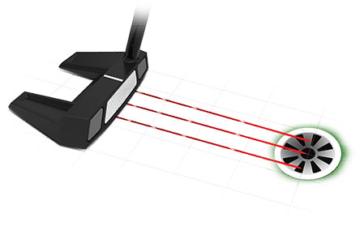

FRONTLINE 10.5 SINGLE BEND PUTTER
Frontline 10.5 is a bladed mallet that is packed with buttery feel and forgiveness. The Tungsten Forward Weighting,Speed Optimized Face Technology, and 2135 alignment combine to deliver unparalleled scoring potential.
TECHNOLOGY

Forward Weights
With Tungsten Forward Weighting and the center of gravity positioned closer to the face, Frontline provides better stability through impact for straighter, more accurate putts.
Speed Optimized Face Technology
Cleveland’s proprietary Speed Optimized Face Technology pattern normalizes ball speed across the face, ensuring consistent distance performance on all your putts.

2135 Technology
Regardless of where your eyes are located at address, achieve perfect alignment on every putt with Cleveland’s 2135 Technology.
Specs
- Model: 10.5
- Hosel type: Slant neck
- Length: 33", 34", 35"
- Lie: 70°
- Loft: 3°
- Head weight: 370g
- Toe hang: Face balanced
- Hand: RH
- Grip size: Oversized
PRICE
149 € / 159 CHF / 1 599 SEK / 135 £